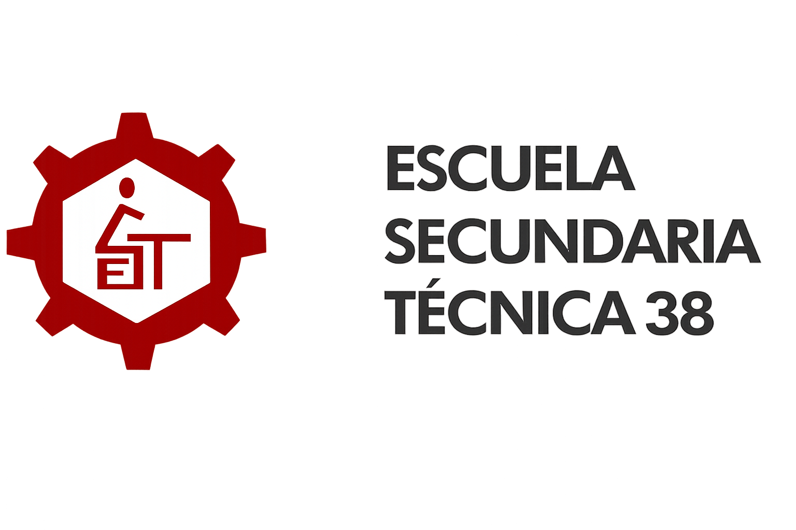

Bienvenidos al sitio web de la Escuela Secundaria Técnica No. 38. Este espacio ha sido creado para brindar un poco de información útil a estudiantes, padres de familia, docentes y visitantes interesados en conocer más sobre nuestra institución. Nuestra escuela tiene el compromiso de ofrecer una educación de calidad que contribuya al desarrollo académico, tecnológico y humano de los estudiantes, fomentando valores como el respeto, la responsabilidad, la honestidad y el trabajo en equipo.
La Escuela Secundaria Técnica No. 38 es una institución educativa dedicada a la formación integral de los jóvenes. proporcionando conocimientos, habilidades y herramientas que les permitan enfrentar los retos de su vida académica y personal.